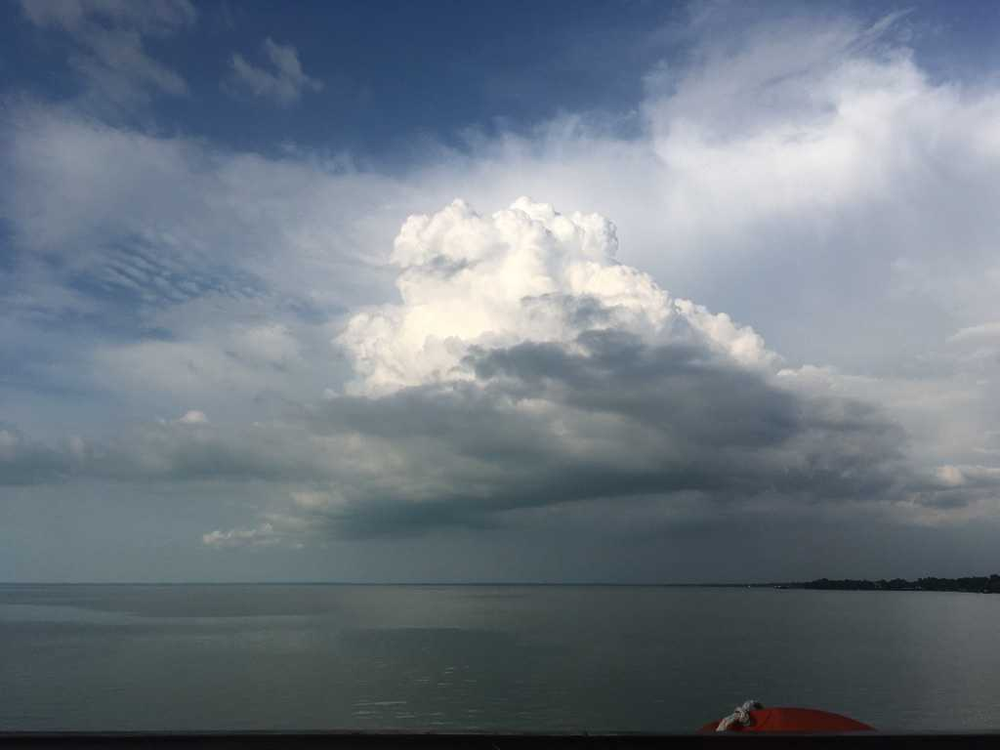

Bearing Witness
There are 16 of us nestled in the sunlit alcove of the church. I look at the stranger sitting on a navy-blue cushion before me and wonder what she is thinking about. She smiles at me, and I smile back. We introduce ourselves and make small talk, as does everyone else and their adjacent stranger. The bell rings, and the room falls into silence.
We turn our gaze to Mike, the PI of the study. His voice is gentle and reassuring, like that of a breeze in the wind, and I find myself getting lost in his intense blue eyes. Then the instructions come: look into your partner’s eyes for the next few minutes.
My partner and I fidget and reposition ourselves on our increasingly stiff and uncomfortable cushions. Our eyes dart toward one another’s, then to the ground and to other objects in the room, then back again to our respective irises. Chocolate brown staring into forest blue. She smiles at me, and I smile back. It is clear we have never actually looked at anyone like this before. I imagine us as two strangers waltzing in a burning room.
A minute or two passes before the discomfort is overtaken by a growing sense of awe and openness. The longer I look at my partner, the more I see beyond the narrow horizon of her eyes. She is no longer just a stranger before me. She is a multitude of malleable identities and stories, a twisted thread of immutable pasts and yet-to-be-had futures, a long line of unfulfilled promises and unfulfilling heartbreaks, an unimaginable plane of N dimensions, an infinity no mathematician could ever tame, prove, or understand.
Searching for certainties is no longer an option on the vast plains of vulnerability. My eyes rest and release the desire to run. There is nowhere left to go or hide. What remains is the raw openness of experience, of bearing witness, of measuring moments not by the hands of the hour, but by the rapid echoes of our beating hearts.
